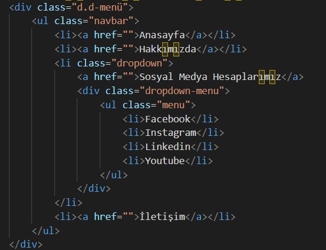

Bootsrap Kütüphanesi
1 Grid
Grid, HTML ve CSS kullanarak düzen oluşturmanıza ve elemanları belirli bir düzen içinde yerleştirmenize olanak tanıyan bir düzenleme sistemidir. Bu, özellikle web sayfaları veya uygulamalarının düzenini yönetmek için kullanışlıdır. CSS Grid Layout veya kısaca CSS Grid olarak da adlandırılır. CSS Grid, bir "grid container" (ızgara konteynırı) ve içindeki "grid items" (ızgara öğeleri) olarak iki temel bileşenden oluşur. Grid container, içerdiği öğeleri düzenlemek için bir ızgara sistemi oluşturur. Grid öğeleri, bu ızgara üzerine yerleştirilen ve düzenlenen içerik öğeleridir.
Aşağıda 12 li sitemlik bir grid yapısı örneği mevcuttur
Grid 1/12.
Grid 2/12.
Grid 3/12.
Grid 4/12.
Grid 5/12.
Grid 6/12.
Grid 7/12.
Grid 8/12.
Grid 9/12.
Grid 10/12.
Grid 11/12.
Grid 12/12.
HTML KOD KISMI :
2 Color
Bu bölümde renkler için en az 10 renk ismi ve renk tanımlanmış olup bu renkleri tanımlarken renklerin arkaplan rengi, yazı rengi ve buton rengi olarak aynı renklerde fakat farklı tonlarda olmasına dikkat edilip yapımıştır. Ayrıca buton yazısının arka plan renkleri üstteki div içindeki tex ile aynı renkte olup uyum sağlanmıştır.
Süheyla Kenet
Süheyla Kenet
Süheyla Kenet
Süheyla Kenet
Süheyla Kenet
Süheyla Kenet
Süheyla Kenet
Süheyla Kenet
Süheyla Kenet
Süheyla Kenet
Html kod kısmı aşağıda görünen şekildedir.

3 Font-Size Yazı Boyutu
HTML ve CSS'de yazıların font boyutunu belirlemek için "font-size" özelliğini kullanabilirsiniz. Font boyutu, genellikle piksel (px), em (em), rem (rem) veya yüzde (%) cinsinden ifade edilir.
Bu yazı font size 14px olarak yazılmıştır.
Bu yazı font size 16px olarak yazılmıştır.
Bu yazı font size 18px olarak yazılmıştır.
Bu yazı font size 20px olarak yazılmıştır.
Bu yazı font size 22px olarak yazılmıştır.
Bu yazı font size 24px olarak yazılmıştır.
Bu yazı font size 26px olarak yazılmıştır.
Bu yazı font size 28px olarak yazılmıştır.
Bu yazı font size 30px olarak yazılmıştır.
Bu yazı font size 32px olarak yazılmıştır.
H1 Başlık yazı fontu 50px.
H2 Başlık yazı fontu 40px.
H3 Başlık yazı fontu 30px
H4 Başlık yazı fontu 20px
H4 Başlık yazı fontu 15px
Html kod kısmı aşağıda görünen şekildedir.

4 Font-Family
CSS ile font family (yazı tipi ailesi) belirlemek için font-family özelliğini kullanabilirsiniz. Bu özellik, metinlerin hangi yazı tipi veya yazı tipleriyle görüntüleneceğini belirler. Belirlediğiniz yazı tipleri, kullanıcı cihazında bulunmuyorsa, tarayıcı daha önce belirlediğiniz sıraya göre alternatif yazı tiplerini kullanacaktır. Örnek olarak font-family: Arial, Helvetica, sans-serif; seçilirse tarayıcı önce Arial yazı tipini arayacak, eğer bulunmuyorsa Helvetica'ya ve son olarak sans-serif (genel yazı tipi ailesi) yazı tipine geçecektir. Bu, metinlerin çoğu kullanıcı cihazında okunabilir bir şekilde görünmesini sağlar.
*Bu yazı font-family: Verdana, Geneva, Tahoma, sans-serif kullanılarak yazılmıştır.
*Bu yazı font-family:'Gill Sans', 'Gill Sans MT', Calibri, 'Trebuchet MS', sans-serif; kullanılarak yazılmıştır.
*Bu yazı font-family:'Times New Roman', Times, serif kullanılarak yazılmıştır.
*Bu yazı font-family:Arial, Helvetica, sans-serif kullanılarak yazılmıştır.
*Bu yazı font-family: Cambria, Cochin, Georgia, Times, 'Times New Roman', serif kullanarak yazılmıştır
Html kod kısmı aşağıda görünen şekildedir.
5 Margin ve Padding
Margin," CSS (Cascading Style Sheets) kullanılarak HTML öğelerinin etrafındaki boşluğu belirlemek veya ayarlamak için kullanılan bir CSS özelliğidir. Margin, bir HTML öğesi ve çevresindeki diğer öğeler arasındaki boşluğu tanımlar ve bu boşluğu belirli bir uzaklık veya boşluk değeri ile kontrol etmenizi sağlar. Margin özelliği, öğelerin birbirine veya sayfa kenarlarına göre nasıl konumlandırılacağını ayarlamak için kullanılır.
margin-top: 10px; /* Üst boşluk */
margin-right: 20px; /* Sağ boşluk */
margin-bottom: 10px; /* Alt boşluk */
margin-left: 20px; /* Sol boşluk */
margin: 15px; /* Üst, Sağ, Alt ve Sol boşluklar 15px */
Margin, öğelerin birbirinden uzaklaşmasını veya yakınlaşmasını sağlar. Sayfa düzenini ve öğelerin yerleşimini kontrol etmek için önemli bir CSS özelliğidir ve tasarımın görünümünü düzenlerken sıklıkla kullanılır.
m0:margin 0px p0:padding 0px,
m1:margin 2px p1:padding 2px;
pl2:margin-left: 4px padding-left 4px;
margin-top:6px; padding-top:6px
margin-bottom:8px; padding-bottom:8px
margin-right: 10px;
yukarda daha iyi anlaşılması için kutucuklar oluşturulup margin ve paddingler verilmiştir.
Html kod kısmı aşağıda görünen şekildedir.
6 Slider
Slider, bir web sayfası veya uygulamada, kullanıcının bir dizi içerik veya görüntü arasında geçiş
yapmasını sağlayan bir arayüz öğesidir. Sliderlar, web tasarımında dikkat çekmek, içeriği vurgulamak
veya kullanıcıların ilgisini çekmek için sıkça kullanılır. Genellikle bir dizi resim, metin veya medya
öğesi (örneğin, reklamlar, ürünler veya duyurular) arasında geçiş yapmak için kullanılır.
Sliderların temel özellikleri şunlar olabilir:
Otomatik Geçiş: Slider, otomatik olarak belirli bir süre aralığında içerikleri döndürebilir. Bu,
kullanıcı müdahalesi olmadan içeriklerin görünmesini sağlar.
Manuel Geçiş: Kullanıcılar genellikle sliderda ileri ve geri düğmeleri, oklar veya dokunmatik
hareketler gibi kontrol yöntemleri kullanarak içerikler arasında elle gezinirler.
Nokta veya Düğme Gezinme: Sliderda hangi slaytın görüntülendiğini göstermek için genellikle
altında veya üstünde noktalar veya düğmeler bulunur. Kullanıcılar bu düğmelere tıklayarak belirli bir
slayta geçebilirler.
Geçiş Efektleri:Sliderlar arasındaki geçişler sırasında efektler kullanılabilir. Bu efektler,
içeriklerin soluklaşması, kaybolması, kaydırılması veya farklı bir şekilde görünür hale gelmesi gibi
animasyonlar olabilir.
Metin ve Başlık: Sliderlar, resimlerin veya içeriklerin yanı sıra başlıklar, metinler ve
açıklamalar içerebilirler.
Slider 1


4 Farklı fotoğraftan oluşan sağdan sola doğru kayan bir slider yapılmıştır.Bu slider yapımı için aşağıda belirtilen html kodları kullanılmıştır.

Slider 2


4 Farklı fotoğraftan oluşan yukarıdan aşağı doğru kayan bir slider yapılmıştır.Bu slider yapımı için aşağıda belirtilen html kodları kullanılmıştır.
Slider 3


4 farklı fotoğraftan oluşan aşağıdan yukarı doğru kayan vir slider oluşturulmuştur.Bu slider yapımı için aşağıda belirtilen html kodları kullanılmıştır.
7 Tablolar
HTML ve CSS ile farklı türlerde tablolar oluşturabilirsiniz. İşte bazı yaygın tablo türleri ve bunları nasıl oluşturacağınıza dair örnekler:
1 Responsive Tablo
1 responsive tablo : Duyarlı (responsive) bir tablo oluşturmak, tablonun farklı ekran boyutlarına uyum sağlamasını ve kullanıcı deneyimini iyileştirmesini sağlar
| AD | SOYAD | NUMARA |
|---|---|---|
| Süheyla | Kenet | 952 |
| Süheyla | Kenet | 952 |
| Süheyla | Kenet | 952 |
Responsive tablonun Html kod kısmı aşağıda görünen şekildedir.
2 Bordered tablo
2 Bordered table," yani "çerçeveli tablo," bir HTML tablosunun hücrelerinin ve başlıklarının sınırlarla (çerçeve veya kenarlık) çevrili olduğu bir tablo türüdür. Bu sınırlar, her hücreyi ve başlığı vurgulamak, tabloyu daha düzenli görünmesini sağlamak ve içeriği daha kolay okunur hale getirmek için kullanılır.
| AD | SOYAD | NUMARA |
|---|---|---|
| Süheyla | Kenet | 952 |
| Süheyla | Kenet | 952 |
| Süheyla | Kenet | 952 |
Bordered tablonun Html kod kısmı aşağıda görünen şekildedir.
3 Striped tablo
3 Stippled tablo," yani "noktalı tablo," HTML ve CSS kullanılarak oluşturulan bir tablo türüdür. Bu tür bir tablo, hücrelerin ve başlıkların arasında noktaların veya çizgilerin olduğu bir desenle süslenmiş tablodur. Bu desen, tablonun içeriğini görsel olarak vurgulamak ve tasarıma estetik bir dokunuş eklemek için kullanılır.
| AD | SOYAD | NUMARA |
|---|---|---|
| Süheyla | Kenet | 952 |
| Süheyla | Kenet | 952 |
| Süheyla | Kenet | 952 |
Stripped tablonun html kodları aşağıda verilmiştir.

4 Hoverable Tablo
Hoverable tablo" terimi, web tasarımında kullanılan bir terimdir ve bir HTML tablosunun hücrelerine veya başlıklarına fare ile üzerine geldiğinizde (hover durumu) belirli bir etki veya stil değişikliği uygulandığı bir tablo türünü ifade eder. Bu tür bir tablo, kullanıcıların tablo içeriğine veya başlıklara işaret ettiğinde görsel bir geri bildirim sağlamak için kullanılır. Hoverable tablolar, kullanıcı deneyimini artırmak ve içeriği daha etkileşimli hale getirmek için yaygın olarak kullanılır.
| AD | SOYAD | NUMARA |
|---|---|---|
| Süheyla | Kenet | 952 |
| Süheyla | Kenet | 952 |
| Süheyla | Kenet | 952 |
Hoverable tablonun html kodları aşağıda verilen gibidir.
8 Resimler
Resimler bir div içerisine alınıp her birine ayrı classlar atanmıştır. classlar da image ler width oranları 100% olarak yayarlanmıştır. Alt resime border radius verilip kenar sivrilikleri giderilmiştir.
Resimlerin html kodları aşağıda verilmiştir.
9 Buton
Butonların html kodları aşağıda verilmiştir.
10 Overflow
Yukarıda resimin ortalı bir şekilde görüneni, resmin yüksekliğe göre ortalananı, resmin genişliğe göre ortalananı ve resmin orjinal boyutunda içeride overflow:hidden olarak görünen toplam 4 class oluşturulmuştur. html kod kısımları aşağıda verilmiştir.
11 Nav Menu
display:inline kullanılarak oluşturulan nav menu
display:inline kullanılarak oluşturulan nav menu için html kodları aşağıda verilmiştir.
Block nav menu
Block nav menu içn html kodları aşağıda verilmiştir.
Normal Nav Menu
Css çzellikleri eklenmemiş normal bir nav menu yukarıda verilmiştir.Html kodları aşağıda verilmiştir.
12 Dropdown Menu
Dropdown menu (açılır menü), bir web sitesi veya uygulamada kullanıcıların bir seçenek listesinden bir veya daha fazla seçenek seçmelerini sağlayan bir kullanıcı arayüzü öğesidir. Dropdown menüler, genellikle navigasyon menüleri, ayarlar, filtreler ve daha fazlası gibi birçok farklı bağlamda kullanılır. Kullanıcı bir açılır menüyü tıkladığında, listeden seçenekleri görüntüleyebilir ve seçebilir.
Üstteki dropdown menü de fare ile sosyal medya hesaplarımıza gelindiğinde altta açılır yeni bir block nav açılmaktadır.
Html kodu aşağıda verilmiştir.
13 Form Elemanları
Form tablosu için html kodları aşağıda verilmiştir.
İletişim
Süheyla Kenet
Bana Ulaşın
Telefon: 05326151615
E-mail: suheylakenett@gmail.com
Linkedin: https://www.linkedin.com/in/s%C3%BCheyla-kenet-7b815b172/